ثلاث خطوات للانضمامThree steps to join
بالترتيب، ومن نفس الحساب. لا تحتاج إلى أي تسجيل إضافي.In order, from the same account. No extra sign-up needed.
-
انضم إلى مجموعة المختبرينJoin the tester group
اضغط «الانضمام إلى المجموعة». المجموعة لا ترسل رسائل، هي فقط تمنحك صلاحية التنزيل.Tap "Join group". The group sends no emails; it only gives you access to the download.
انضم إلى المجموعةJoin the group -
فعّل الاختبارOpt in to the test
بعد الانضمام بدقائق، افتح الرابط واضغط «أصبح مختبِرًا».A few minutes after joining, open the link and tap "Become a tester".
أصبح مختبِرًاBecome a tester -
ثبّت التطبيقInstall the app
ثبّت مسرى من Google Play. إن لم يظهر فورًا، انتظر قليلًا وحاول مجددًا.Install Masra from Google Play. If it doesn't show up right away, wait a little and try again.
افتح في Google PlayOpen in Google Play
استخدم نفس حساب Google المسجّل في متجر Play على هاتفك في الخطوات الثلاث، وإلا لن يظهر لك التطبيق.Use the same Google account your phone's Play Store uses for all three steps, or the app won't show up for you.
ما الذي ستجرّبهWhat you'll be testing
لقطات من النسخة الحالية للتطبيق.Screens from the current build.
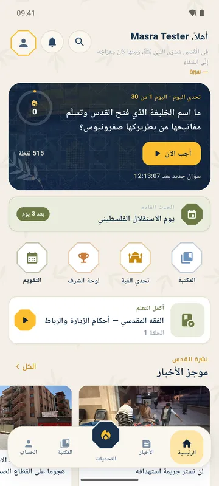
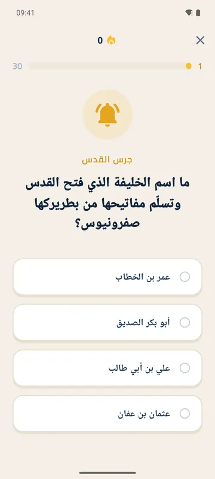
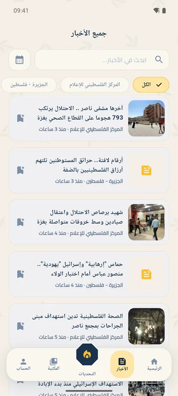
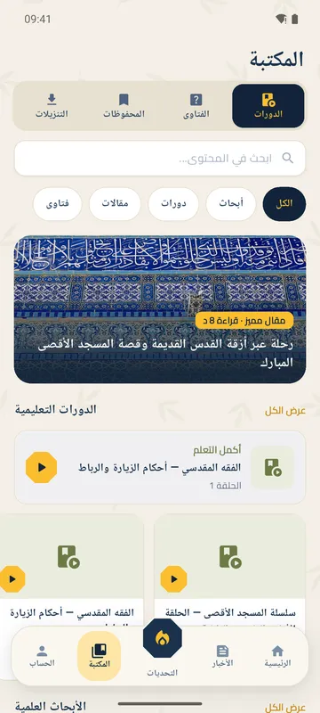
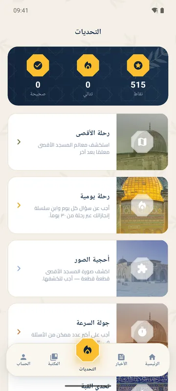
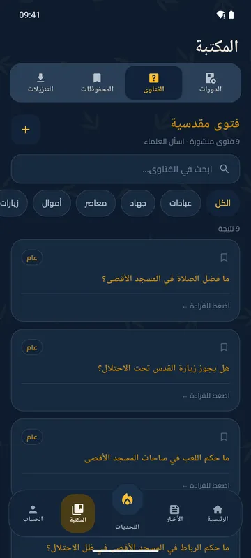
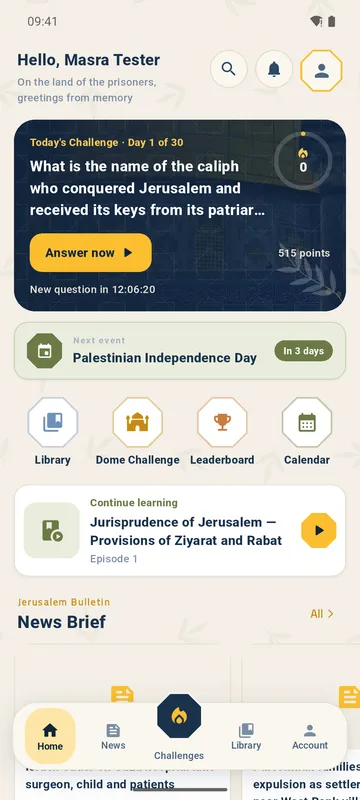
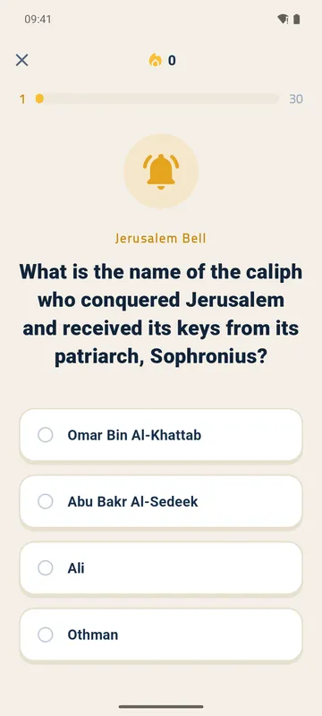
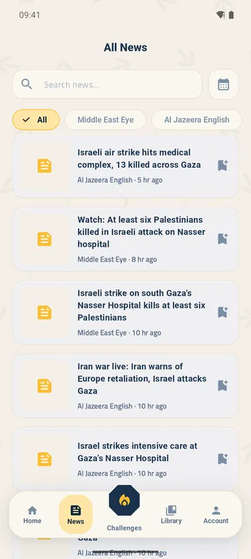
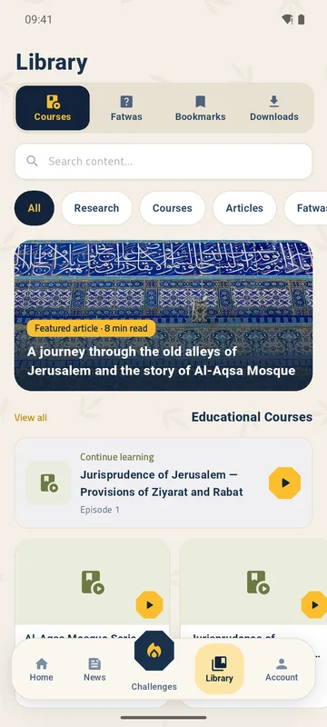
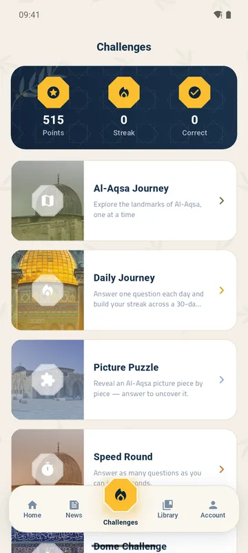
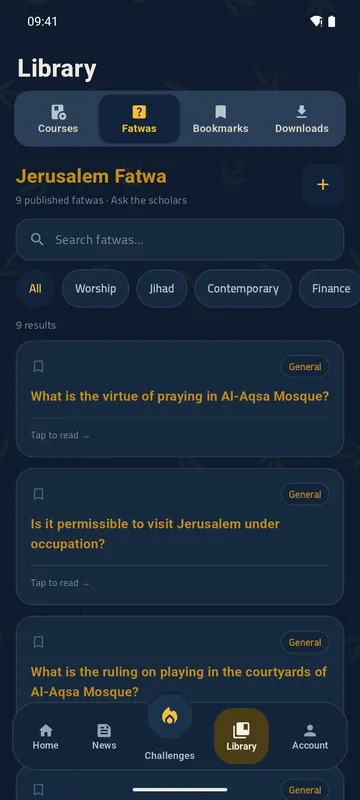
اسحب لرؤية المزيدSwipe to see more
أسئلة شائعةQuestions
لماذا أنضم إلى مجموعة Google؟
Google Play يسمح بتنزيل النسخة التجريبية فقط للحسابات المضافة إليها. الانضمام إلى المجموعة يضيف حسابك تلقائيًا.
هل ستصلني رسائل من المجموعة؟
لا. النشر في المجموعة مقتصر على المشرفين، ولا يرى أحد قائمة الأعضاء غيرهم.
فتحت رابط المتجر ولم أجد التطبيق
تأكد أن حساب المتجر على هاتفك هو نفس الحساب الذي انضممت به، ثم افتح رابط الخطوة ٢ مرة أخرى. قد يحتاج الأمر بضع دقائق بعد الانضمام.
هل يعمل على iPhone؟
النسخة التجريبية حاليًا لأندرويد فقط.
كيف أوقف الاختبار؟
افتح رابط الخطوة ٢ واضغط «مغادرة البرنامج»، أو غادر المجموعة. ستنتقل إلى النسخة العامة عند صدورها.
Why do I need to join a Google Group?
Google Play only lets accounts on the test list download a beta. Joining the group puts your account on that list automatically.
Will the group email me?
No. Only the managers can post, and only they can see who's in the group.
I opened the store link and the app isn't there
Check that your phone's Play Store account is the one you joined with, then open the step 2 link again. It can take a few minutes after joining.
Does it work on iPhone?
The beta is Android only for now.
How do I stop testing?
Open the step 2 link and tap "Leave the program", or leave the group. You'll move to the public version when it's out.